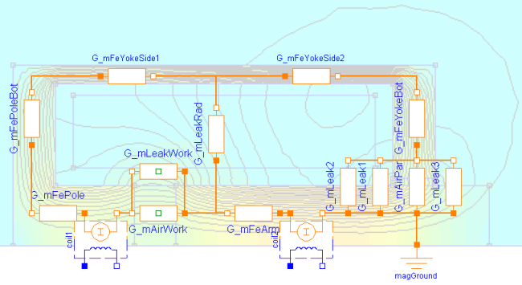

AdvancedSolenoidAdvanced network model of a lifting magnet with planar armature end face, split magnetomotive force |
Diagram
{kind=link}
Information
This information is part of the Modelica Standard Library maintained by the Modelica Association.
Please have a look at SimpleSolenoid for a general description of this actuator. Unlike in that simple magnetic network model, the coil is split into two lumped elements here. This enables for more realistic modelling of the radial leakage flux between armature and yoke (leakage permeance G_mLeakRad). Especially for large air gaps, the influence of this leakage flux on the actuator's inductance and its electromagnetic force is rather strong. Please have a look at ComparisonQuasiStationary for a comparison of both models with FEA-based results included as reference.

The parasitic capacitances c_par1 and c_par2 across both partial coils assure that the voltages across these coils are well-defined during simulation.
Parameters (18)
| N |
Value: 957 Type: Real Description: Number of turns |
|---|---|
| R |
Value: 5 Type: Resistance (Ω) Description: Coil resistance |
| R_par |
Value: 1e5 Type: Resistance (Ω) Description: Resistance parallel to the coil, in series to C_par |
| C_par |
Value: 1e-9 Type: Capacitance (F) Description: Capacitance parallel to the coil, in series to R_par |
| r_yokeOut |
Value: 15e-3 Type: Radius (m) Description: Outer yoke radius |
| r_yokeIn |
Value: 13.5e-3 Type: Radius (m) Description: Inner yoke radius |
| l_yoke |
Value: 35e-3 Type: Length (m) Description: Axial yoke length |
| t_yokeBot |
Value: 3.5e-3 Type: Length (m) Description: Axial thickness of yoke bottom |
| l_pole |
Value: 6.5e-3 Type: Length (m) Description: Axial length of pole |
| t_poleBot |
Value: 3.5e-3 Type: Length (m) Description: Axial thickness of bottom at pole side |
| t_airPar |
Value: 0.65e-3 Type: Length (m) Description: Radial thickness of parasitic air gap due to slide guiding |
| material |
Value: Material.SoftMagnetic.Steel.Steel_9SMnPb28() Type: BaseData Description: Ferromagnetic material characteristics |
| r_arm |
Value: 5e-3 Type: Radius (m) Description: Armature radius = pole radius |
| l_arm |
Value: 26e-3 Type: Length (m) Description: Armature length |
| c |
Value: 1e11 Type: TranslationalSpringConstant (N/m) Description: Spring stiffness between impact partners |
| d |
Value: 400 Type: TranslationalDampingConstant (N·s/m) Description: Damping coefficient between impact partners |
| x_min |
Value: 0.25e-3 Type: Position (m) Description: Stopper at minimum armature position |
| x_max |
Value: 5e-3 Type: Position (m) Description: Stopper at maximum armature position |
Connectors (3)
| p |
Type: PositivePin Description: Electrical connector |
|
|---|---|---|
| n |
Type: NegativePin Description: Electrical connector |
|
| flange |
Type: Flange_b Description: Flange of component |
Components (24)
| material |
Type: BaseData Description: Ferromagnetic material characteristics |
|
|---|---|---|
| ground |
Type: Ground |
|
| coil1 |
Type: ElectroMagneticConverter Description: Electro-magnetic conversion in first half of coil |
|
| r_1 |
Type: Resistor Description: Resistance of first half of coil |
|
| g_mFeYokeSide1 |
Type: HollowCylinderAxialFlux Description: Permeance of first half of yoke's hollow cylindric section |
|
| g_mFeArm |
Type: HollowCylinderAxialFlux Description: Permeance of ferromagnetic armature |
|
| g_mAirWork |
Type: HollowCylinderAxialFlux Description: Permeance of working air gap (between armature and pole end faces) |
|
| g_mFeYokeBot |
Type: HollowCylinderRadialFlux Description: Permeance of bottom side of ferromagnetic yoke |
|
| g_mAirPar |
Type: HollowCylinderRadialFlux Description: Permeance of parasitic radial air gap due to slide guiding |
|
| g_mFePoleBot |
Type: HollowCylinderRadialFlux Description: Permeance of bottom side of pole |
|
| g_mFePole |
Type: HollowCylinderAxialFlux Description: Permeance of ferromagnetic pole |
|
| armature |
Type: TranslatoryArmatureAndStopper Description: Inertia of armature and stoppers at end of stroke range |
|
| g_mLeak1 |
Type: QuarterCylinder Description: Leakage permeance between inner edge of yoke bore and armature side face |
|
| g_mLeak2 |
Type: QuarterHollowCylinder Description: Leakage permeance between inner side of yoke bottom and armature side (r_i = t_airPar) |
|
| coil2 |
Type: ElectroMagneticConverter Description: Electro-magnetic conversion in first half of coil |
|
| c_par1 |
Type: Capacitor Description: Parasitic capacitance assigned to first half of coil |
|
| G_mLeakRad |
Type: HollowCylinderRadialFlux Description: Permeance of radial leakage flux tube between armature side and yoke side |
|
| g_mFeYokeSide2 |
Type: HollowCylinderAxialFlux Description: Permeance of second half of yoke's hollow cylindric section |
|
| c_par2 |
Type: Capacitor Description: Parasitic capacitance assigned to second half of coil |
|
| r_par1 |
Type: Resistor Description: Parasitic resistance assigned to first half of coil |
|
| r_par2 |
Type: Resistor Description: Parasitic resistance assigned to second half of coil |
|
| r_2 |
Type: Resistor Description: Resistance of second half of coil |
|
| g_mLeak3 |
Type: QuarterCylinder Description: Leakage permeance between outer edge of yoke bore and armature side face |
|
| g_mLeakWork |
Type: LeakageAroundPoles Description: Permeance of leakage air gap around working air gap (between armature and pole side faces) |
Used in Examples (2)
|
Modelica.Magnetic.FluxTubes.Examples.SolenoidActuator
Slow forced armature motion of both solenoid models so that electromagnetic field and current are quasi-stationary |
|
|
Modelica.Magnetic.FluxTubes.Examples.SolenoidActuator
Pull-in stroke of both solenoid models after a voltage step at time t=0 |